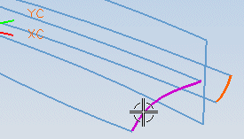
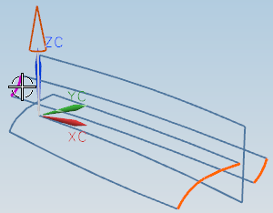
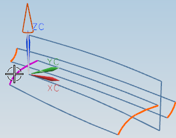

点击沿矢量的曲线。
您将选择水平曲面的左侧边和右侧边、并在 ZC 方向上投影。
在矢量对话框中，选择 ZC 轴 ，然后点击确定。
选择水平曲面的右侧边并点击确定，您也可以使用鼠标中键。

点击编辑片体边界对话框中的确定。
您将使用水平曲面的左侧边来定义倒圆面左端的新边界。
选择倒圆面左端的边并点击确定。

选择沿矢量的曲线。
您将选择水平曲面左侧的边，并在 ZC 方向上投影。
选择水平曲面左端的边。

点击确定。